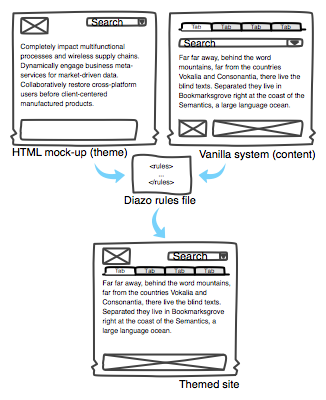

We Write XSLT, So You Don’t Have To™¶
di-az-o (also di-az-o-type)
noun
a copying or coloring process using a diazo compound decomposed by ultraviolet light
Diazo allows you to apply a theme contained in a static HTML web page to a dynamic website created using any server-side technology. With Diazo, you can take an HTML wireframe created by a web designer and turn it into a theme for your favourite CMS, redesign the user interface of a legacy web application without even having access to the original source code, or build a unified user experience across multiple disparate systems, all in a matter of hours, not weeks.
When using Diazo, you will work with syntax and concepts familiar from working with HTML and CSS. And by allowing you seamlessly integrate XSLT into your rule files, Diazo makes common cases simple and complex requirements possible.
Contents: